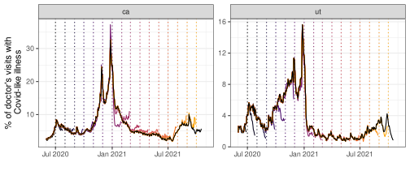

An `epi_df` object, 549 x 3 with metadata:
* geo_type = state
* time_type = day
* as_of = 2025-08-12 00:22:00.536653
# A tibble: 549 × 3
geo_value time_value percent_cli
* <chr> <date> <dbl>
1 ca 2020-06-01 2.75
2 ca 2020-06-02 2.57
3 ca 2020-06-03 2.48
4 ca 2020-06-04 2.41
5 ca 2020-06-05 2.57
6 ca 2020-06-06 2.63
7 ca 2020-06-07 2.73
8 ca 2020-06-08 3.04
9 ca 2020-06-09 2.97
10 ca 2020-06-10 2.99
# ℹ 539 more rowsIntroduction to Panel Data in Epidemiology
MICOM Tooling Workshop 2025
David Weber, Nat DeFries
Adapted from slides by Alice Cima, Rachel Lobay, Daniel McDonald, Ryan Tibshirani, with huge thanks to Logan Brooks, Xueda Shen, and Dmitry Shemetov
12 August 2025
1 System Setup
System setup – Required software
We assume you already have
R
- An IDE. We’ll use RStudio, but you can use VSCode or Emacs or Whatnot
System setup – Downloading the materials
Easy way:
- Click the Big Green Button that says < > Code ▾
- Choose Download Zip
- Open the Zip directory.
In RStudio:
2 Our tools are meant for panel data
Panel data, or longitudinal data, contains measurements of subjects over time
When working with aggregated data, the subjects are geographic units (e.g. counties, states).
- Ex: The % of outpatient doctor visits that are COVID-related in CA from June 2020 to Dec. 2021 (docs):
3 Our tools are specifically designed to handle versioned data
Many epidemic aggregates are subject to reporting delays and revisions
- This is because individual-level data has delayed availability:
Person comes to ER → Admitted → Has some tests → Tests come back → Entered into the system → …
- So, a “Hospital admission” may not be attributable to a particular condition until a few days have passed (the patient may even have been released)
This means there can be many different values for the same date
Many data sources are subject to revisions
Case and death counts are frequently corrected or adjusted by authorities
Medical claims can take weeks to be submitted and processed
Lab tests and medical records can be backlogged
Surveys are not completed promptly
An accurate revision log is crucial for researchers building forecasts
Obvious but crucial
A forecast that is made today can only use data we have access to today
So we have to track both when the event occurred and when it was reported
The event time is indicated by
time_valueAnd we add a second time index to indicate the data
version
→ An `epi_archive` object, with metadata:
ℹ Min/max time values: 2020-06-01 / 2021-11-26
ℹ First/last version with update: 2020-06-06 / 2021-11-29
ℹ Versions end: 2021-11-29
ℹ A preview of the table (29283 rows x 4 columns):
Key: <geo_value, time_value, version>
time_value geo_value percent_cli version
<Date> <char> <num> <Date>
1: 2020-06-01 ca 2.140116 2020-06-06
2: 2020-06-01 ca 2.140379 2020-06-08
3: 2020-06-01 ca 2.114430 2020-06-09
4: 2020-06-01 ca 2.133677 2020-06-10
5: 2020-06-01 ca 2.197207 2020-06-11
---
29279: 2021-11-23 ca 5.992657 2021-11-29
29280: 2021-11-24 ca 6.478894 2021-11-27
29281: 2021-11-24 ca 6.451234 2021-11-29
29282: 2021-11-25 ca 7.657370 2021-11-29
29283: 2021-11-26 ca 9.178562 2021-11-29Three types of revisions
- Sources that don’t revise (provisional and final are the same)
Google symptoms
- Predictable revisions
Claims data (CHNG) and public health reports aligned by test, hospitalization, or death date
Almost always revised upward as additional claims enter the pipeline
- Revisions that are large and erratic
COVID cases and deaths
These are aligned by report date
Comparison between “predictable” and “erratic” revisions
For the HRR containing Charlotte, NC
DV-CLI signal (left): regularly revised, but effects fade
JHU CSSE cases (right) remain “as first reported” until a major correction is made on Oct. 19
4 Access Epidata data with epidatr
Epidata: is a repository of aggregated epi-surveillance time series
Code is open-source. Most indicators are public.
To date, it has accumulated over 5 billion records.
At the peak of the pandemic, handled millions of API queries per day.
Many aren’t available elsewhere
- Data from
- public health reporting, medical insurance claims, medical device data, Google search queries, wastewater, app-based mobility patterns.
- Added value
- revision tracking, anomaly detection, trend detection, smoothing, imputation, geo-temporal-demographic disaggregation.
Installing {epidatr}
(you already did this, but just for posterity…)
Install the CRAN version
or the development version
The CRAN listing is here.
API key grants privileged access and can be obtained by registering with us
Anyone may access the Epidata API anonymously without providing any personal data!!
Anonymous API access is subject to some restrictions: public datasets only; 60 requests per hour; only two parameters may have multiple selections
Tip
- The
{epidatr}client automatically searches for the key in theDELPHI_EPIDATA_KEYenvironment variable. - We recommend storing it in your
.Renvironfile, which R reads by default. - More on setting your API key here.
Using {epidatr}
# A tibble: 3 × 15
geo_value signal source geo_type time_type time_value direction issue
<chr> <chr> <chr> <fct> <fct> <date> <dbl> <date>
1 nc confirmed… hhs state day 2024-04-01 NA 2024-04-22
2 nc confirmed… hhs state day 2024-04-05 NA 2024-04-22
3 nc confirmed… hhs state day 2024-04-06 NA 2024-04-22
# ℹ 7 more variables: lag <dbl>, missing_value <dbl>, missing_stderr <dbl>,
# missing_sample_size <dbl>, value <dbl>, stderr <dbl>, sample_size <dbl>The covidcast endpoint supports * in its time and geo fields.
Signal values for all available counties: replace geo_values = "06059" with geo_values = "*".
pub_covidcast() outputs a tibble, where each row represents one observation
Also reports
issue: The date this observation was publishedlag: The period between when the events occurred and when the observation was published
Allows for historical reconstructions of information that was available at specific times
5 Versioning in {epidatr}
Use as_of or issues to request versioned data
as_ofalways fetches one versionissuescan fetch multiple- Only one may be used at a time
Example
Doctor Visits (from the covidcast endpoint)
- The percentage of outpatient visits w/ Covid-like illness for Pennsylvania on May 1, 2020:
# A tibble: 1 × 7
geo_value signal source time_value issue lag value
<chr> <chr> <chr> <date> <date> <dbl> <dbl>
1 pa smoothed_adj_cli doctor-visits 2020-05-01 2020-05-07 6 2.58
Understanding Data — cmu-delphi/micom-tooling-workshop-2025